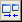
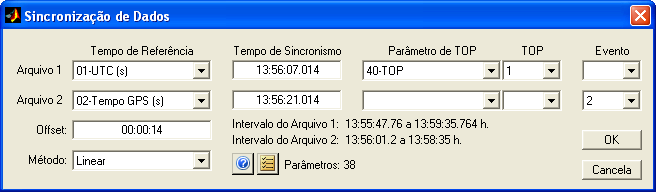
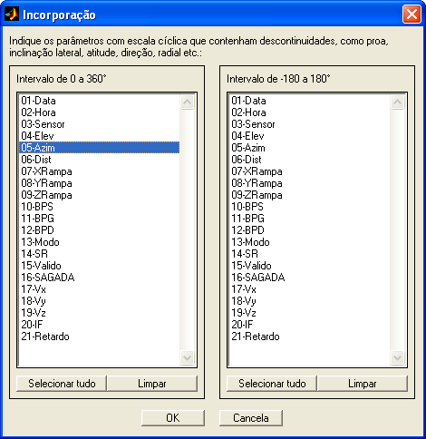
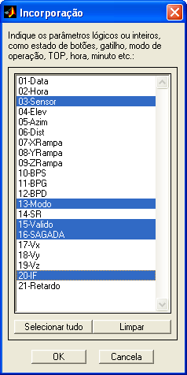
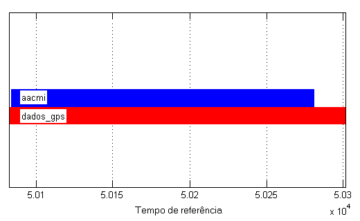
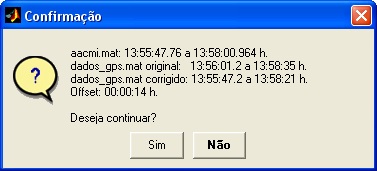
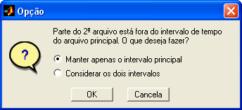
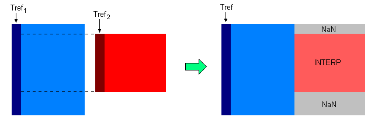
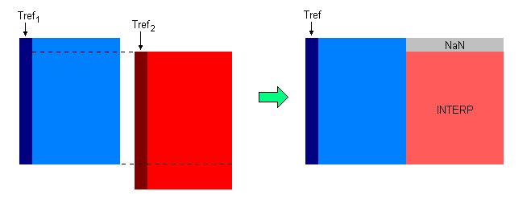
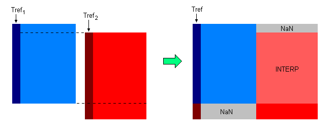

| Menu Arquivo |
|
Incorporar
Arquivo mat
Essa operação
permite incorporar ao arquivo aberto outro
arquivo mat que tenha uma lista diferente de parâmetros.
Clique no menu “Arquivo ►
Incorporar arquivo mat”
ou no botão 
Para o correto carregamento, o conteúdo do arquivo a ser incorporado deve seguir um padrão de armazenamento reconhecido pelo R_DAT.
Será
apresentada ao usuário uma janela de sincronização de
dados, na qual o deverão ser informados os tempos de referência dos
dois
arquivos e o offset entre eles.

Existem quatro
formas de informar o offset:
- Insira o valor diretamente no campo “Offset”, em
qualquer formato
de tempo reconhecido
pelo R_DAT.
- Insira os tempos de algum evento de sincronismo nos
campos “Tempo de
Sincronismo”, em qualquer formato
de tempo reconhecido pelo R_DAT. O valor do offset
será calculado automaticamente.
- Caso exista, selecione um parâmetro de TOP adequado e um
TOP de
sincronismo. O parâmetro deve ser adequado, ou seja, ser composto por
valores
naturais crescentes e seu nome deve ser reconhecido
como TOP. O
campo “Tempo de Sincronismo”
correspondente será preenchido automaticamente com o tempo referente ao
centro
do intervalo amostral que registrou a alteração do número do TOP.
- Caso existam,
selecione um dos eventos cadastrados em cada arquivo. O campo “Tempo de
Sincronismo” correspondente será preenchido automaticamente.
Qualquer
combinação das três últimas opções é possível (inserção
manual, TOP ou evento). O offset
será
calculado automaticamente.
Ao selecionar
um tempo de referência, o intervalo do
parâmetro é apresentado na parte inferior da janela (primeira à última
observação).
No campo "Método", selecione o método de interpolação. As opções são Linear e Vizinho.
 para
selecionar os parâmetros que deseja incluir na tabela de dados. A
seleção é feita da mesma forma que na ferramenta Seletor
de parâmetros. O
número de parâmetros selecionados é apresentado à direita do botão.
para
selecionar os parâmetros que deseja incluir na tabela de dados. A
seleção é feita da mesma forma que na ferramenta Seletor
de parâmetros. O
número de parâmetros selecionados é apresentado à direita do botão.
Durante a incorporação, parâmetros com escala cíclica, como ângulos de Euler, podem ser incorretamente interpolados entre observações que apresentam descontinuidade (por exemplo, proa de 359 para 0° seria interpolado pelo meio da escala, quando deveria manter o salto para o início da escala). Para evitar esse efeito, o usuário deve indicar quais parâmetros possuem essa característica (em graus):

Os parâmetros com escala cíclica são transformados em parâmetros contínuos para a incorporação e então retornados para a escala original.
Caso haja algum parâmetro com escala cíclica em radianos, converta-o para graus antes de realizar a incorporação.
Parâmetros lógicos (como estado de acionamento botões ou sistemas) ou inteiros (como TOP, modo de operação, hora, minuto), podem ser incorretamente interpolados entre observações que apresentam saltos (por exemplo, de 0 a 1 surgiriam valores intermediários). Para evitar esse efeito, o usuário deve indicar quais parâmetros possuem essa característica:

Os parâmetros lógicos ou inteiros não serão interpolados. Será atribuído o valor da observação original mais próxima.
Ao prosseguir,
o R_DAT irá verificar se os parâmetros de
tempo informados são adequados (monotônicos
crescentes e sem pontos inválidos). Caso afirmativo, será realizada a
correção
do offset e apresentada a
distribuição dos dados de cada matriz no tempo. Caso um dos tempos não
seja
adequado (com ruído, por exemplo), a operação não poderá ser realizada.

Antes da
confirmação, serão informados os intervalos de
tempo (início e fim) de cada matriz, além da correção de offset
realizada (caso houver):

Caso o
intervalo de tempo do segundo arquivo não esteja
inteiramente contido no intervalo de tempo do arquivo principal, o
R_DAT
informará o usuário, que poderá optar por descartar a parte excedente
do
segundo arquivo ou mantê-la:

Caso opte pela
opção “Manter apenas o intervalo principal”, o
R_DAT irá interpolar, pelo método selecionado, toda a matriz do segundo arquivo de
acordo com
o tempo de referência do arquivo principal, atribuindo NaN
quando o intervalo principal extrapolar o
intervalo da matriz 2. Dessa forma, a matriz 2 passará a ter o mesmo
número de
observações que a matriz 1 e estará sincronizada no tempo. O R_DAT
poderá então
concatenar as duas matrizes lateralmente.
Caso opte pela
opção “Considerar os dois intervalos”, o
intervalo excedente da matriz 2
será incorporado ao
tempo principal. A parte em comum das duas matrizes sofrerá o mesmo
processo
descrito na opção anterior, a parte excedente do segundo arquivo será
mantida
inalterada e o intervalo equivalente da matriz 1
será
preenchido com NaN.
Os três casos
de incorporação de arquivos são explicados
graficamente abaixo:
Caso 1:
Intervalo 2 contido no
Intervalo 1:

Caso 2:
Intervalo 2 não contido
no Intervalo 1 e excedente desprezado:

Caso 3:
Intervalo 2 não contido
no Intervalo 1 e excedente mantido:

Caso não haja offset
entre os tempos, o tempo de referência do arquivo 2
será excluído.
O parâmetro
“No. OBS.” da matriz 1
será excluído e o parâmetro “No. OBS.” da matriz resultante será
recalculado.
A matriz PARAM será refeita para representar a união dos parâmetros e a numeração será recalculada.
Serão mantidas as matrizes auxiliares e a lista de eventos e pontos de ensaio do arquivo 1.
Após o término
da operação, o R_DAT atualizará as matrizes
DADOS e PARAM.
| |
Concatenar
arquivo mat |
Salvar
arquivo |
|